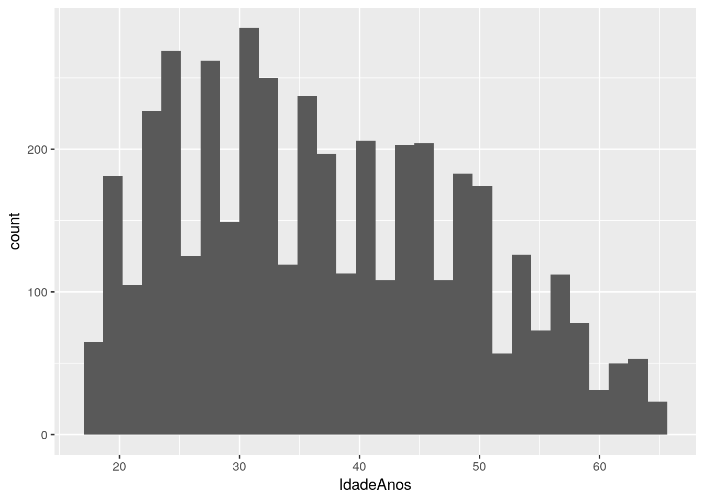
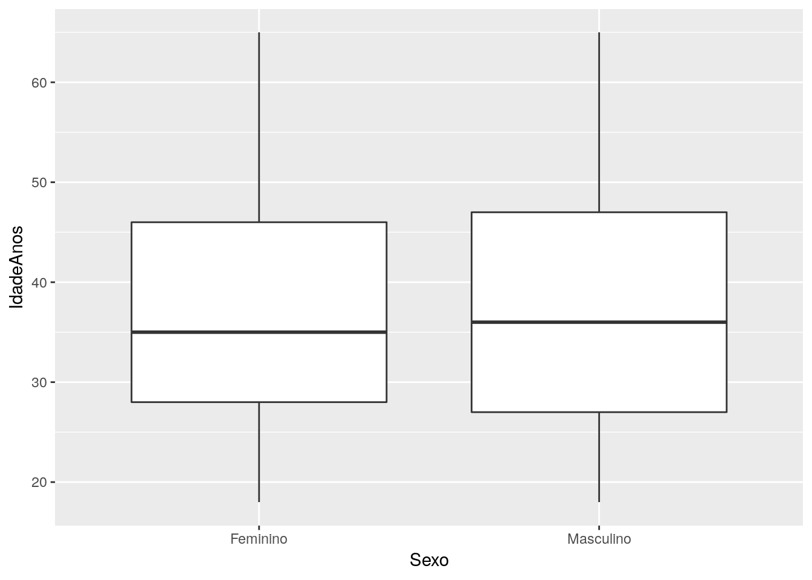

Exercícios da Aula 01
Síntese da aula
Aqui resumimos rapidamente o conteúdo desta aula em tópicos:
Aspectos introdutórios
- Os programas
Re RStudio - Uso de funções e operadores no
R - Istalação de pacotes
- Checagem dos dados
- Estrutura de dados no
Re tipos de variáveis - Criação de tabelas de frequência com
count() - Criação de gráficos (barras, histograma, boxplot)
- Encadeamento de funções com o pipe
%>% - Como obter ajuda
Operadores
::– é usado após o nome de um pacote para chamar uma função (pacote::função())$– o cifrão é usado para acessar variáveis em um data frame (objeto$variavel)<-– o sinal de atribuição é usado para guardar dados em um objeto=– também atribui valores, mas em geral é usado para argumentos de funções%>%– o pipe faz parte dotidyversee permite encadear múltiplas operações
Funções
Da base do R:
c(): combina valoresinstall.packages(): instala pacotes do CRANdevtools::install_github(): instala pacotres do GitHubread.csv(): importa dados.csvhead(): extrai as primeiras linhas do datasettail(): extrai as últimas linhas do datasetstr(): gera informações sobre o conjunto de dados e as variáveissummary(): sumarisa as variáveisis.na(): busca os valores faltantescolSums(): soma os valores das colunasprop.table(): calcula proporçõesround(): arredonda os valores de uma variávelhelp(): consultar documentação de uma função ou pacote
Do dplyr:
dplyr::mutate(): permite transformar variáveis ou criar novasdplyr::count(): gera as frequências de variáveis categóricas
Do ggplot2:
ggplot(): cria um canvas para incluir elementos gráficosaes(): mapeia os dados aos elementos gráficosgeom_bar(): plota um gráfico de barrasgeom_histogram(): plota um histogramageom_boxplot(): plota um boxplotgeom_label()plota os rótulosscale_x_continuous(): manipula o Eixo X do gráficoscale_y_continuous(): manipula o Eixo Y do gráfico
Exercícios
Agora vamos praticar o que vimos nesta aula. Os três exercício a seguir devem ser realizados individualmente, de forma ordenada, já que cada tarefa prepara para a realização da seguinte.
Aqui já vamos importar os dados que serão utilizados:
df <- read.csv("dados/aula01.csv", stringsAsFactors = FALSE)E carregar os pacotes:
library(dplyr)##
## Attaching package: 'dplyr'## The following objects are masked from 'package:stats':
##
## filter, lag## The following objects are masked from 'package:base':
##
## intersect, setdiff, setequal, unionlibrary(ggplot2)Exercício 1: Analise a distribuição de frequências da variável Sexo
- Altere os traços
___no código abaixo com o valorSexo, para produzir uma tabela de frequências.
# # calcular as frequências
# freq <- df %>%
# count(___) %>%
# mutate(prop = prop.table(n))- Agora use o objeto criado no passo anterior para criar o gráfico de barras da distribuição. Troque os primeiros traços por
freqe o segundo porSexo.
# # visualizar os dados
# ggplot(___, aes(x = ___, y = prop, label = round(prop, 4))) +
# geom_bar(stat = "identity") +
# geom_label()- Agora reutilize o código das duas etapas acima para plotar a distribuição de frequências da variável
EstadoCivil.
Dica: cole os códigos anteriores no próximo chunk e depois substitua
SexoporEstadoCivil.
# cole ou digite abaixo o seu códigoExercício 2: Analise a distribuição da variável NumPessoasFam
- Analise o código abaixo e o histograma criado, depois siga as orientações:
ggplot(df, aes(x = IdadeAnos)) +
geom_histogram()## `stat_bin()` using `bins = 30`. Pick better value with `binwidth`.
Veja na mensagem gerada que, por padrão, o histograma é plotado com 30 colunas. Agora manipule a quantidade de colunas do histograma para 25, incluindo este parâmetro no argumento bin = ___.
# Cole aqui o código acima e faça as modificações necessárias- Agora reutilize o código acima para plotar um boxplot com a distribuição da variável
IdadeAnos.
# Cole aqui o código acima e faça as modificações necessáriasExercício 3: Analise a distribuição de idade por estado civil
Este exercício é uma forma de conhecer mais sobre o potencial do ggplot2.
Até agora só fizemos análises univariadas, sem explorar a relação entre as variáveis da nossa base de dados. Converter análises de uma variável em análises entre uma um mais variáveis é bastante fácil.
Observe o código e o boxplot gerado abaixo e depois siga as instruções.
ggplot(df, aes(x = Sexo, y = IdadeAnos)) +
geom_boxplot()
Agora reutilize o código acima para gerar um boxplot da distribuição de idade em relação ao estado civil.
# Cole aqui o código acima e faça as modificações necessárias